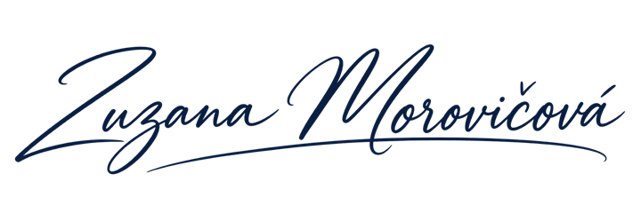

Mgr. Zuzana
Morovičová
Nezávislá kandidátka
Dokumenty k volebnej kampani
Správa o prostriedkoch vynaložených na volebnú kampaň
Stiahnuť PDFSprievodný list
Stiahnuť PDF
Nezávislá kandidátka
Dokumenty k volebnej kampani
